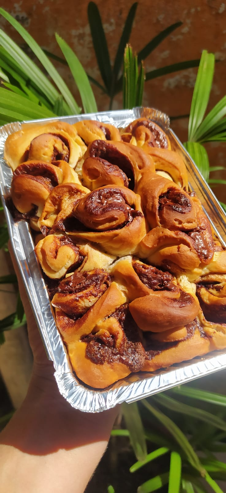
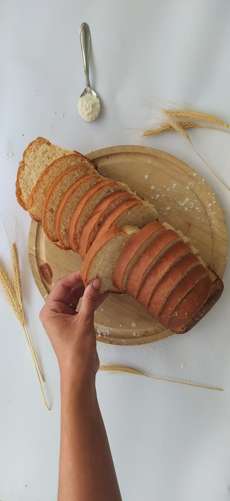
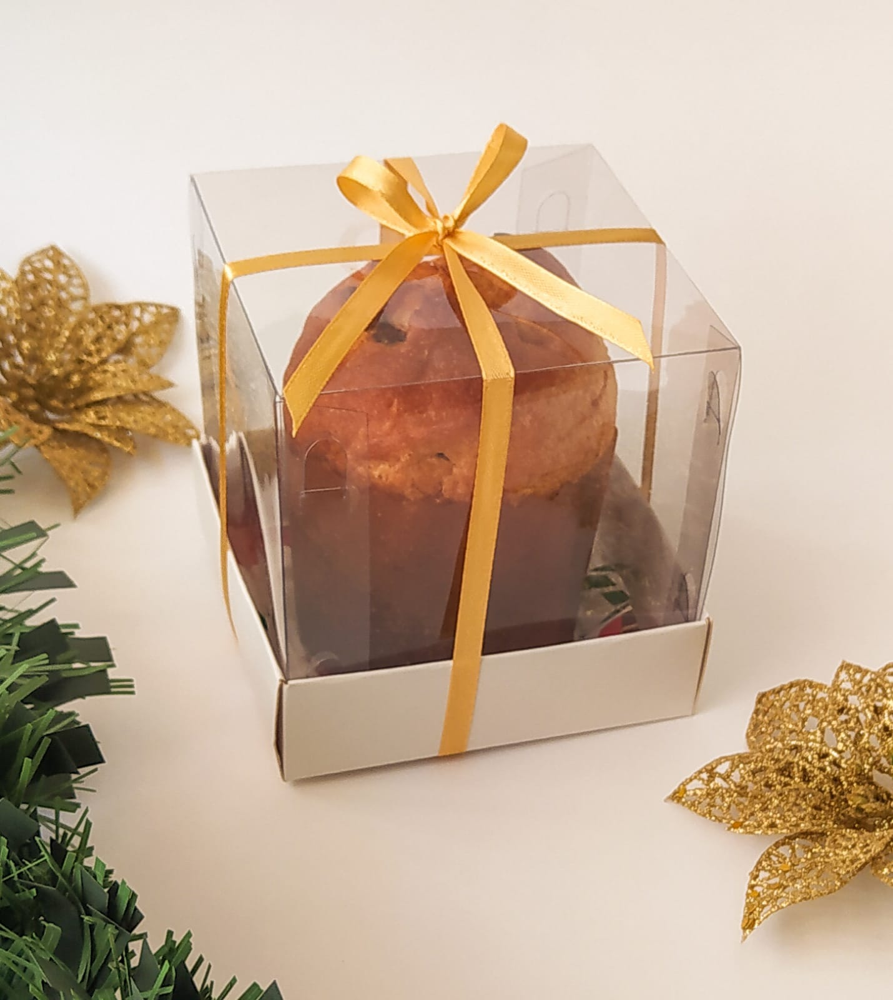
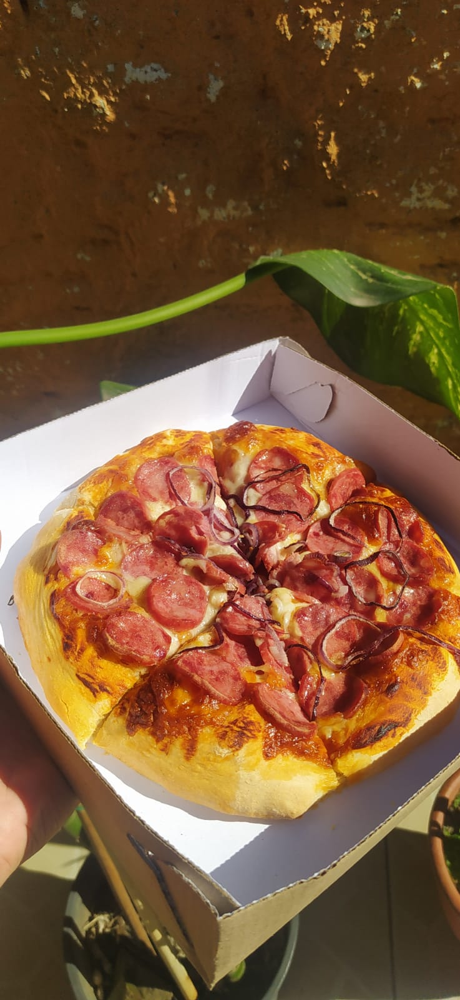
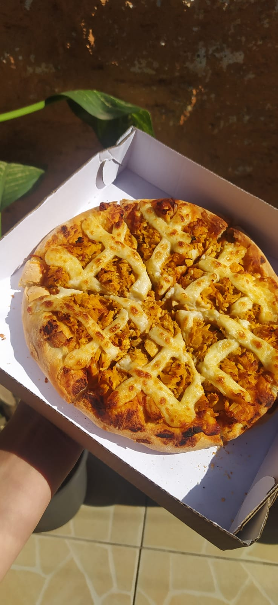
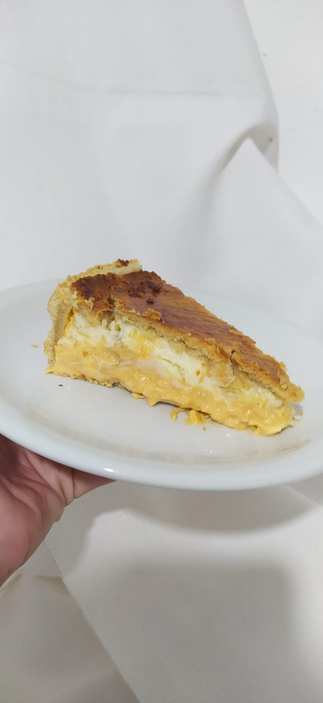
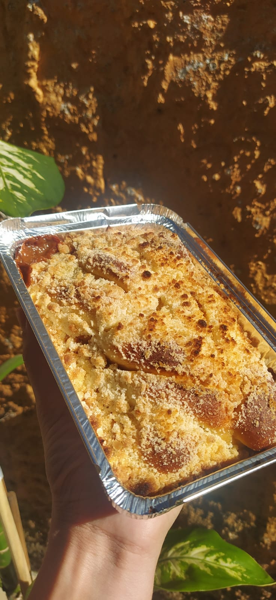
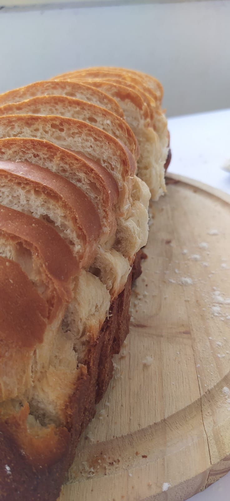

Pães e Pizzas
Pães
Os pães são a base da vida culinária em muitos países, e existem tantos tipos diferentes, desde pães integrais até pães doces e recheados. Eles são perfeitos para serem consumidos com manteiga, geleia ou como base para sanduíches. Os pães são a escolha ideal para uma refeição rápida e fácil ou como acompanhamento para pratos principais.
Pizzas
Já as pizzas são um verdadeiro fenômeno culinário. Com sua massa crocante e recheios saborosos. As pizzas podem ser personalizadas com uma variedade de ingredientes, desde frutos do mar até vegetais e temperos. Cada pizza é uma obra de arte única que pode ser apreciada pelos olhos e pelo paladar.
Galeria

Pão Recheado de Nutella.
 Massa Pré Assada.
Massa Pré Assada.

Pão Caseiro.

Panettone.

Pizza de Calabresa.

Pizza de Frango.

Torta de Frango e Cream Cheese

Traçado de Doce de Leite com Farofa.

Pãozinho caseiro.